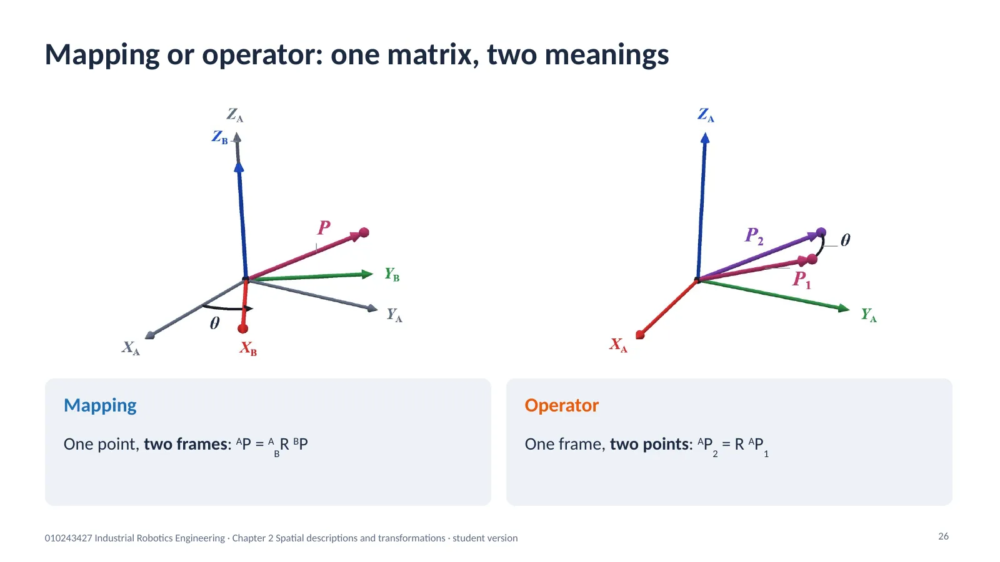
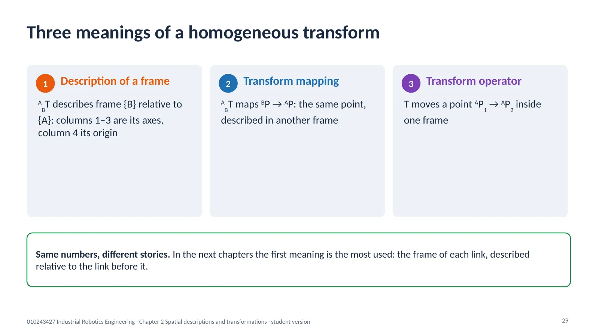
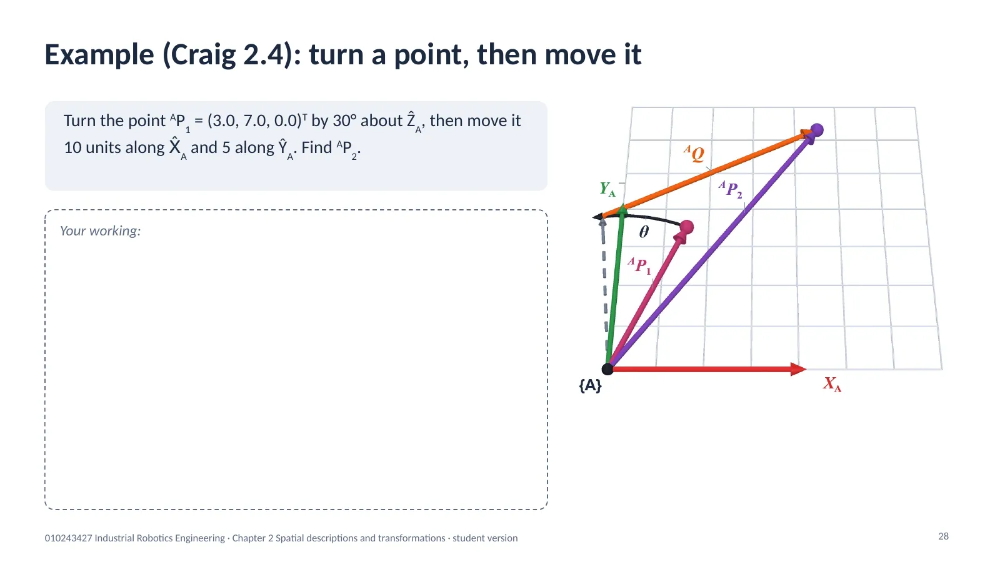
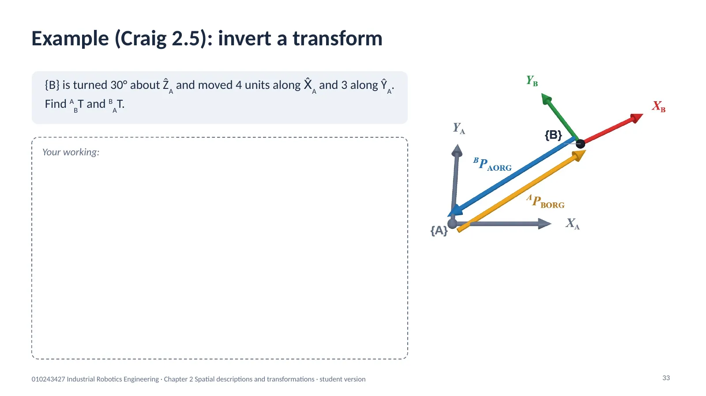
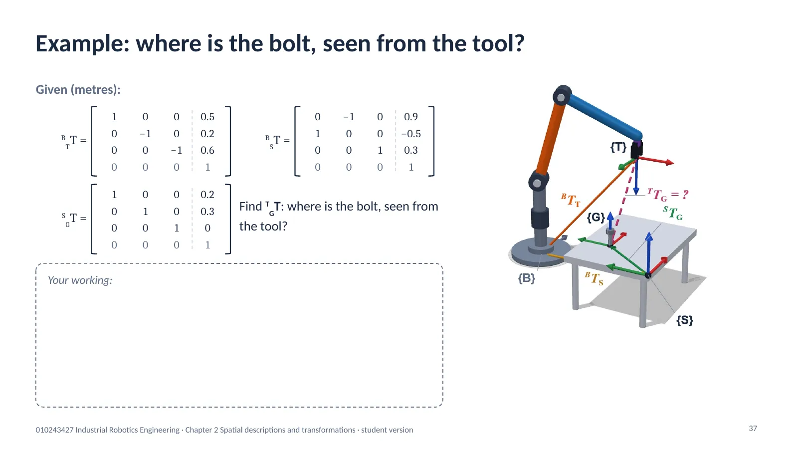

เมทริกซ์การแปลงตัวเดียวมีสามความหมาย: บรรยายเฟรม ส่งจุดระหว่างเฟรม หรือเลื่อนจุดภายในเฟรมเดียว (ตัวดำเนินการ) จากนั้นหน้านี้ใช้การแปลงเป็นเครื่องคิดเลข: คูณต่อกันเมื่อเฟรมต่อเป็นสาย หาผกผันเมื่อเดินย้อนลูกศร และแก้สมการการแปลงเพื่อหาเฟรมที่ไม่รู้ ครอบคลุมสไลด์หน้า 26–37 (Craig 2.4–2.6) มี เครื่องมือ 2 ชิ้น (A, B) และ 4 โจทย์ รวมการบ้านข้อ 2.1
One transform has three meanings: it describes a frame, maps a point between frames, or moves a point inside one frame (an operator). This page then uses transforms as a calculator: multiply them along a chain of frames, invert them to walk against an arrow, and solve a transform equation for an unknown frame. It covers slides pp. 26–37 (Craig 2.4–2.6), with two tools (A, B) and 4 problems, including homework 2.1.

ซ้าย (การส่ง): จุด P อยู่กับที่ เฟรม {B} หมุนไป θ ตัวเลขของ P ใน {B} เปลี่ยน แต่จุดไม่ขยับ ขวา (ตัวดำเนินการ): มีเฟรมเดียว จุด P1 หมุนไปเป็น P2 เมทริกซ์ RZ(θ) ตัวเดียวกันทั้งสองข้าง ตัวเลขใต้ภาพยืนยัน: ᴬP ทางซ้ายเท่ากับ ᴬP2 ทางขวาเสมอ
Left (mapping): P stays put while frame {B} turns by θ; the numbers of P in {B} change, the point does not move. Right (operator): one frame; P1 turns into P2. The same RZ(θ) on both sides: the numbers under the picture show that ᴬP on the left always equals ᴬP2 on the right.

เฟรม {B} รู้เทียบ {A} และ {C} รู้เทียบ {B} เลื่อนแถบเลื่อนแล้วดูว่าลูกศรประสีชมพู (ᴬPCORG) คือคอลัมน์สุดท้ายของผลคูณ กดปุ่ม "สลับลำดับ" เพื่อดูว่า ᴮCT ᴬBT ให้เมทริกซ์อื่น: การคูณเมทริกซ์สลับลำดับไม่ได้
{B} is known in {A} and {C} is known in {B}. Move the sliders and check that the dashed pink arrow (ᴬPCORG) is the last column of the product. Press "swap the order" to see that ᴮCT ᴬBT gives another matrix: matrix products do not commute.

